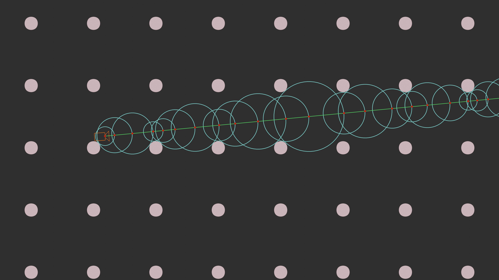

In this article I would like to introduce you to the bright and colorful world of Ray Marching. At the end of this tutorial we will build a pet Ray Marcher in Rust, and use it to render some simple scenes. But first, what even is Ray Marching?
Forgotten triplet
Usually, when we hear about computer graphics, we tend to think about either rasterization, or ray tracing. Rasterization is the one more used in the past: It consists mostly of drawing textured triangles on the screen, and using clever tricks to emulate realistic lighting. The effects may not be as realistic as they could be, but rasterization is really fast.
Ray tracing, on the other hand, is the new kid on the block. It uses mathematical equations to find intersections between triangles and rays of virtual light. Those intersections can be then used to simulate light bouncing in the scene, giving us an externally realistic lighting, with stunning reflections, at the cost of performance. As the number of triangles and ray bounces increases, the sheer amount of compute required to properly simulate the scene increases dramatically.
Then there is Ray Marching, the "forgotten triplet". Often looked over, ignored, and why? Mostly because it is very different from its siblings. Not better, worse, just different. If you try to use it the "normal" way, with meshes made up of triangles, the performance will be... not impressive to say at least. Shovels tend to be terrible at mixing tea, but it does not mean they are useless. You are just using them wrong.
So, how to use ray marching properly? You have to first accept the fact that you should change your approach. And try to speak it's language: math. Ray Marching sees the world as an enormous math equation. And if you describe the world this way, it will understand, giving you fast and stunning results. It may be significantly harder to model the world using mathematical functions, but it has undeniable advantages. With some clever tricks, your scenes can have near infinite levels of detail, and be almost endless. The only limit will be the precision of data types you are using.
Are you still skeptical? Does all of this seem too hard to believe? Here are some examples of impressive work done by other people, admittedly a little bit more skilled than I.
 Image by Inigo Quilez
Image by Inigo Quilez
 Image form the game Marble Marcher by CodeParade.
Image form the game Marble Marcher by CodeParade.
As you can see from those 2 examples, you can achieve some crazy results using ray marching, if put in enough effort. Now that we introduced what it can do, and how to approach it, lets explain how it works!
Using math to calculate rays path
Okay, so I talked a big game about Ray marching. So, how does it work? The name already gives us a hint: there are some rays, which "march". What does that mean? In this rendering technique, each ray moves step by step, hence it "marches". But how big is this "step" and how do we detect that a ray has intersected some geometry? All of this information is provided by what is called a Signed Distance Function or Signed Distance Field, SDF in short. The Field and Function in the name tends to be used interchangeably, and it does not really matter which naming convention we will use(I tend to just write it as SDF).
The SDF tells us both how much a ray will step, and if it intersected anything. But how? Please look at the diagram below, and then I will explain everything.

SDFs, take in a point in space, and, as the name implies, return some distance. What kind of distance? The distance to the closest object in the scene. Lets name this distance d. This means that the ray can move at least d in any direction, and it is guaranteed that it will not hit anything. So we step the ray by d, and check the SDF again. In the diagram, a red ball signals the point at which ray ended up after a step. The blue rings represent the distance returned by the SDF at the red points. Green lines connecting the red points are the steps a ray takes. So, we now know how much the ray will step. But how to detect a collision? We will simply check if the distance returned by the SDF is smaller than a certain margin, for example, 0.001. If we are closer than this margin, it means that we have hit something.
This may seem crazy inefficient. Stepping a small distance at a time, repeating the same action over and over. It looks like there is no way this can be better at anything than ray marching. But before you dismiss ray marching as an oddity without any real value, I would like to remind you of something. Remember the "endless worlds" I talked about before? We can use a simple modulus function to repeat the SDF infinitely.

A primitive sphere SDF can be cheaply repeated infinite times. Similar approach can be used for any SDF, and solutions derived from it can enable easy creation of fractal structures, with near infinite levels of detail.
Getting Rusty!
Okay, after all of this talk about ray marching, lets start implementing a very basic version in Rust! Lets first add a dependency to help us with Vector operations: glam. The version I will use is "0.24.1". First, lets define simple a trait representing all SDFs:
pub use glam::Vec3 as Vector3;
trait SDF{
fn distance(&self,position:Vector3)->f32;
}I prefer to use the longer name for a 3D vector over the default Vec3 name, because I feel it is to similar to Vec. This helps with understanding the code.
The traits function get_distance returns the value of the SDF at the given position in space.
We will expand this trait in the future, but for now, lets implement it for a simple sphere.
struct Sphere{
position:Vector3,
radius:f32,
}
impl SDF for Sphere{
fn distance(&self,position:Vector3)->f32{
let distance_from_center = self.position.distance(position);
distance_from_center - self.radius
}
}A sphere has a position and a radius. Since any point on the surface of the sphere is exactly radius from the center of the sphere, a points distance to the spheres surface is distance_from_center - radius. Now that we have a simple SDF, lets define a Ray struct and implement the bare-bones ray marching algorithm.
struct Ray {
position:Vector3,
direction:Vector3,
has_hit:bool, // Temporary
}
impl Ray{
fn step(&mut self,sdf:&impl SDF){
const RAY_HIT_TRESHOLD:f32 = 0.001;
let distance = sdf.distance(self.position);
if distance < RAY_HIT_TRESHOLD{
// Here we will handle bounces in the future.
self.has_hit = true;
return;
}
self.position += self.direction * distance;
}
fn trace(&mut self,sdf:&impl SDF,max_steps:usize){
for _ in 0..max_steps{
self.step(sdf);
}
}
}The current, simplified version of the algorithm does not handle bounces, lighting, it simply checks if the ray will hit anything. This will not look impressive at all, but will enable us to test that the algorithm works at all. Such a simplified version should be also far easier to understand.
So, lets go over the algorithm. At each position, we sample the SDF. If the distance is smaller than the threshold, we handle the collision. If it is not, we step along the ray by distance. We repeat this max_steps times, and then we have our final ray. We now should be able to get a simple image on our screen. We will not do anything fancy yet, and simply display the result in the terminal window.
fn main(){
let (img_x,img_y) = (50,25);
let sdf = Sphere{position:Vector3::new(0.0,0.0,8.0),radius:0.875};
for y in 0..img_y{
let screen_y = (((y as f32)/(img_y as f32)) - 0.5)*2.0;
for x in 0..img_x{
let screen_x = (((x as f32)/(img_x as f32)) - 0.5)*2.0;
let mut ray = Ray{
position:Vector3::new(screen_x,screen_y,0.0),
direction:Vector3::new(0.0,0.0,1.0),
has_hit:false
};
ray.trace(&sdf,16);
if ray.has_hit{
print!("#");
}
else{
print!(".");
}
}
println!();
}
}After running the completed example, you should see something like this appear in your terminal.
..................................................
..................................................
.......................#####......................
................###################...............
.............#########################............
...........#############################..........
.........#################################........
.......#####################################......
......#######################################.....
.....#########################################....
.....#########################################....
.....#########################################....
....###########################################...
....###########################################...
.....#########################################....
.....#########################################....
.....#########################################....
......#######################################.....
.......#####################################......
.........#################################........
...........#############################..........
.............#########################............
................###################...............
.......................#####......................
..................................................It admittedly looks quite boring. There are a lot of shortcomings of the current implementation. It returns only a binary hit/did not hit kind of information. Since uses an orthographic camera(Rays do not diverge), no matter how far the sphere will be, it will look exactly the same.